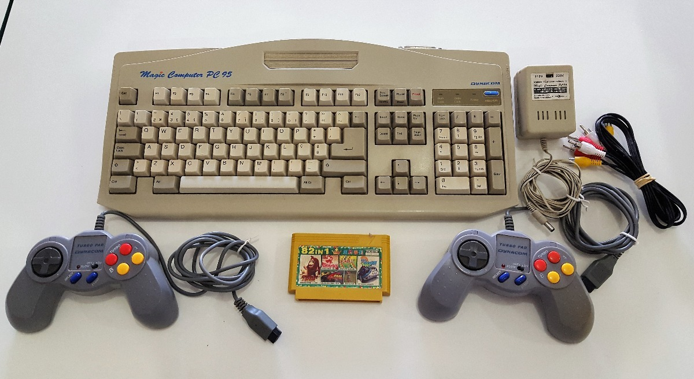
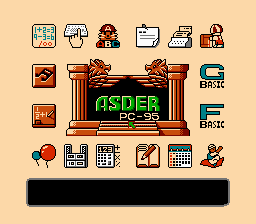
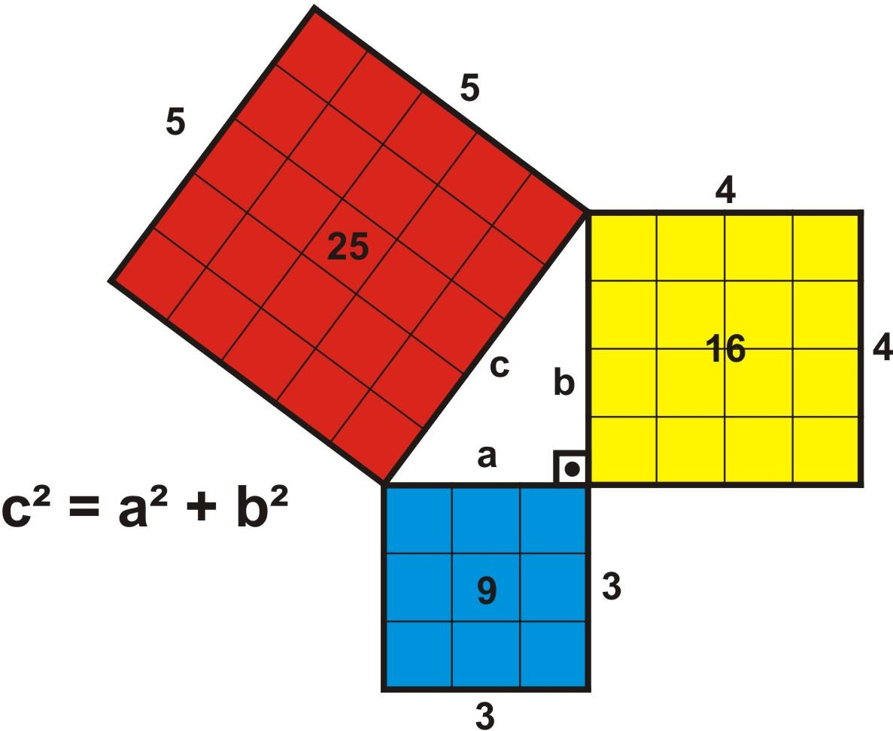

Olá, meu nome é
Bruno Andrade e aqui você vai encontrar experimentos feitos em
javascript usando
canvas API.
❝A vida não é feita só de
CRUD!❞
Eu comecei a programar aos 13 anos, mesmo sem saber que estava programando.
Minha vó havia presenteado meu irmão e eu com um console genérico do NES - famoso nintendinho. O console era um teclado
com uma entrada para cartuchos.

Nele havia alguns jogos bem simples, e vinha com um programa de interface chamado G basic.

No manual - que eu tenho até hoje - havia um título bem chamativo : Crie seus próprios jogos. Foi quando eu passei a maior
parte do tempo copiando as linhas de código do manual, sem saber que estava programando.
Eu, como muitos da minha geração, passei a maior parte da vida jogando. E eu não me lembro exatamente qual jogo me despertou
a curiosidade de saber como os jogos eram feitos, mas eu lembro que foi mais ou menos no fim de vida do playstation 1 - o
console que eu mais joguei.
Eu fui ter meu primeiro PC bem tarde, aos 17 para 18 anos. Eu estava no último ano do segundo grau. Nos primeiros meses
eu só baixava emuladores e jogava. Mas foi num fórum de jogos, que eu conheci um amigo de São Paulo que me mostrou seu site
de jogos com menu em flash animado, e foi aí que eu comecei a estudar desenvolvimento web. Eu perguntei a ele tudo o que
precisava pra fazer um site como o dele. Ele me disse que deveria aprender lógica de programação. Baixei todos os conteúdos
possíveis - com a minha internet discada. Ficava horas e horas estudando e tentando entender o que era tudo aquilo, e sim,
eu aprendi a programar "sozinho".
Meu primeiro contato com programação foi com a linguagem ActionScript 2. Eu descobri que dava pra fazer jogos com flash,
e minha vontade de fazer jogos voltou. Copiava códigos de sites sobre flash, mas sempre sem entender a matemática e física
por trás daquilo tudo.
Sempre fui um péssimo aluno em matemática - sempre achei que não era pra mim. Essa limitação me permitia apenas fazer uns
"jogos" de point and click. Comecei a trabalhar e, de novo, deixei de lado mais uma vez minha vontade de fazer jogos, afinal
de contas, eu percebi que era necessário ter conhecimento em matemática e física hahahah.
Seu eu pudesse voltar no tempo e me avisar, eu diria : Presta atenção nas aulas de matemática e física u_u.
Depois de um longo tempo trabalhando com desenvolvimento web, eu decidi estudar pra valer desenvolvimento de jogos. Começando
pelo "monstro" que eu mais temia : Matemática e física. E a chave do conhecimento para essa jornada foi descobrir o que significava
a raiz quadrada de um número.
Radix Quadratum 9 Aequalis 3
O Lado do quadrado de área 9 é igual a 3
Nada mais é que o lado do quadrado. E então o teorema de Pitágoras fez todo o sentido. E esse teorema é o mais usado no desenvolvimento
de jogos.

■ +
■ =
■
Quadrado azul +
quadrado amarelo =
quadradão vermelho
Mas a gente tá interessado no tamanho C; Por isso que no final a gente sempre "extrai" a raiz. Porque C é apenas um
lado do quadradão vermelho ;)
Desde então, um novo mundo de possibilidades se abriu diante de mim. Eu ainda tenho muita dificuldade, mas tô progredindo
consideravelmente para quem nunca se deu bem com os números.
Nesse site/portfólio pretendo compartilhar tudo o que aprendi estudando desenvolvimento de jogos, não é muita coisa mas
é uma busca de amor.
Uma observação importante : Todo o conteúdo desse site é uma busca feita do zero, portanto, você não irá encontrar conteúdo
sobre engines - nada contra. Inclusive, esse site foi feito do zero, nenhuma lib ou framework de terceiros.
Afinal, eu amo fazer o que faço 🧡.